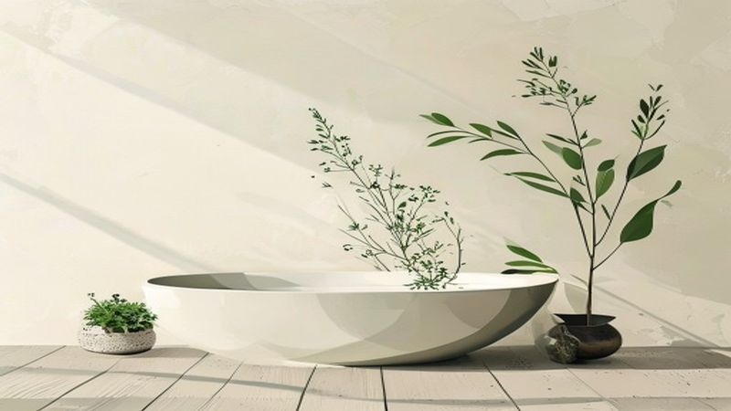

芯から温まり、わたしに還る。生薬のちからで叶える、冬の心地よい養生習慣
2026.05.03

冷たい風が吹き抜け、家路を急ぐ足取りが少しだけ早くなる季節。ふと鏡を見たとき、顔色が少し暗かったり、肩に力が入っていたりすることはありませんか？
「なんとなく調子が悪い」「体が冷えて眠りが浅い」。そんなサインは、日々の忙しさの中で後回しにしてしまいがちな、心と体からの「休んで」というメッセージかもしれません。
セルフケアブランドfucuu（フクウ）が大切にしているのは、植物のちからを借りて、本来の自分へと戻る時間。今回は、古来より伝わる「養生」の考え方を取り入れた、芯から温まるためのセルフケア術をご紹介します。
1. 「冷え」は心と体からのサイン。なぜ今、養生が必要なのか？
東洋医学において、冷えは万病の元と言われます。単に気温が低いだけでなく、ストレスや不規則な生活によって「気・血・水」の巡りが滞ることで、体は芯から冷え固まってしまいます。
特に現代人は、パソコンやスマートフォンの使いすぎにより、頭はフル回転しているのに体は動かさないというアンバランスな状態になりがちです。これが自律神経の乱れを招き、手足の冷えや心のこわばりを引き起こします。
「養生」とは、決して難しいことではありません。自分の状態を観察し、いたわってあげること。
一日の終わりに、今日頑張った自分のために、お湯を沸かし、香りを感じ、深く呼吸する。そんな小さな習慣が、明日を生きるための「ふくふく」とした幸福感へと繋がっていきます。

2. 自然の恵み「生薬」がもたらす、特別なバスタイム
冷えた体を解きほぐすために、最も効果的なのは「入浴」です。しかし、ただお湯に浸かるだけではもったいない。そこで取り入れたいのが、100%天然の生薬のちから。fucuuの生薬入浴剤は、化学的な成分を一切使わず、植物の根や皮、葉をそのまま閉じ込めています。
生薬成分が溶け出したお湯は、肌あたりが柔らかく、体の深部までじっくりと熱を届けます。合成香料にはない、大地や草木の深い香りが浴室いっぱいに広がると、自然と呼吸が深くなっていくのを感じるはずです。
生薬の代表格である「生姜（ショウキョウ）」は血行を促進し、「当帰（トウキ）」は女性特有の悩みに寄り添い、体を芯から温めます。湯船の中でゆっくりと肌をなでる時間は、まさに「わたしに戻る」ための儀式。無添加だからこそ味わえる、自然との一体感を楽しんでください。
3. 日常に寄り添う「fucuu流・3つの温活セルフケア」
お風呂上がりから寝る前までの時間をどう過ごすかで、翌朝の充足感は大きく変わります。誰でもすぐに取り入れられる、具体的な温活のヒントをお伝えします。
①「3つの首」を、植物のぬくもりで守る
首、手首、足首。この「3つの首」は太い血管が皮膚に近い場所を通っているため、ここを冷やさないことが温活の鉄則です。お風呂上がりはすぐにレッグウォーマーを履き、湯冷めを防ぎましょう。
② 香りとともに、深い「深い呼吸」を取り戻す
ストレスを感じると、呼吸は浅くなり、血管が収縮して冷えが悪化します。そんな時は、国産アロマオイルを一滴、ティッシュやディフューザーに垂らしてみてください。クロモジやヒノキといった日本古来の香りは、日本人のDNAに深く刻まれた安らぎを与えてくれます。香りを吸い込みながら、4秒かけて鼻から吸い、8秒かけてゆっくりと口から吐き出す。これだけで、体中の巡りがスムーズになります。

Tips: 入浴温度の黄金ルール
温活において、お湯の温度は非常に重要です。42度以上の熱すぎるお湯は交感神経を刺激し、かえって体が緊張してしまいます。「38度〜40度のぬるめのお湯に15分〜20分」。これが、副交感神経を優位にし、生薬の成分をじっくり浸透させるための黄金ルールです。お風呂から上がる5分前に、生薬のパックを優しく揉み出すと、さらに成分が濃厚になりますよ。
③ スマホを置いて、静寂を味わう
寝る直前までブルーライトを浴びていると、脳が休息モードに入れません。布団に入る30分前からはスマートフォンを置き、キャンドルの火や、あるいは暗めの照明の中で過ごしましょう。「今日はこれができた」「あの時、嬉しかった」。そんな自分へのポジティブなフィードバックを心の中で唱えることで、精神的な養生も完了します。
まとめ：巡り、満ちる。明日のあなたをフクフクに。
セルフケアは、何かを「付け足す」ことではなく、余計なものを「削ぎ落とし」、本来の自分に戻ることだと、fucuuは考えます。
生薬の香りに包まれ、芯から体が温まると、頑なだった心もふんわりと解けていきます。体が温まれば、心に余裕が生まれ、日常の小さな幸せに気づけるようになる。その巡りこそが、私たちが届けたい「フクフク」とした豊かな時間です。
今夜は少しだけ丁寧に、自分を扱ってみませんか？100%天然の植物たちが、あなたの「わたしに還る時間」を優しくサポートします。
明日もまた、あなたが自分らしく、健やかな笑顔で過ごせますように。
fucuuの生薬入浴剤・国産アロマは、BASEオンラインショップでご購入いただけます。
BASEで購入する